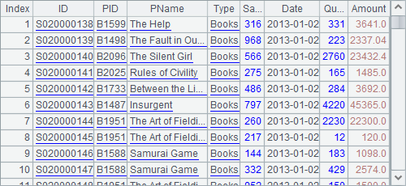
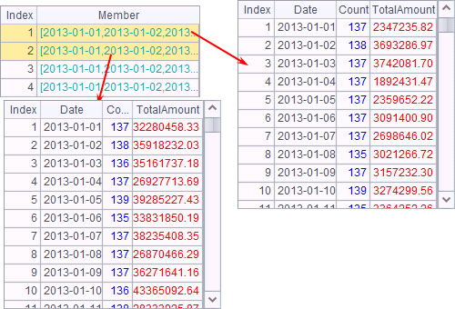

It is a common approach to split a big data file into segments and then compute each segment separately. Both text files and bin files can be imported by segment by adding a file segmentation parameter. Text Files explains generating a text-based table sequence by importing data by segment. Importing data through cursor is almost identical. For example:
|
|
A |
|
1 |
=file("PersonnelInfo.btx") |
|
2 |
=A1.cursor@b(;1:5) |
|
3 |
=A2.fetch() |
|
4 |
=A1.cursor@b(;2:5) |
|
5 |
=A4.fetch() |
Both A2 and A4, when generating the cursor, use a file segmentation parameter, such as 1:5. When data is retrieved from a bin file by segment, the file needs to be pre-handled by the export@z function. That means the export() function uses the @z option to generate the PersonnelInfo.btx file. According to the file segmentation parameter, the cursor data is divided into 5 parts. A2 returns the 1st part and A4 returns the 2nd part. A3 and A5 fetch data respectively as follows:


The PersonnelInfo.btx file has 100,000 records in total. The five parts into which it is divided are approximately same in sizes but don¡¯t necessary contain the same number of records. When performing segmental retrieval, esProc can automatically adjust the range of data being retrieved so as to ensure the data integrity, as with the 1st and the 2nd segments in the exaple. This will ensure the continuity and uniqueness of the data that is being handled.
It¡¯s the same way to perform segmental retrieval on a text file and a bin file, except that @b option will be omitted for the former. While retrieving data by segment from a bin file, the file can be divided into multiple segments corresponding to different groups of data through @z option. For detailed information, see Group Cursor. Segmenting data by group is a feature uniquely applied to bin files; it can¡¯t be used on text files.